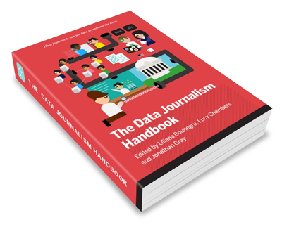
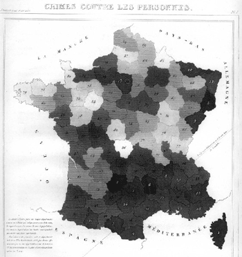

I recently volunteered to write anything that was needed for the Data Journalism Handbook. In March 02011, I went to Istanbul to meet-up with several investigative journalists to see if there was any cross-over and help them in any way possible when digging through their reams of data. From that, I have hovered at the peripheries of journalism. In December 02011, I attended the O’Reilly NewsFoo to learn more and contribute what I could to the discussion. So when I learnt about a book on two topics which interest me, I jumped at helping in any way I could.
The following is my section of the Data Journalism Handbook. You can read the full book online at http://datajournalismhandbook.org if this piques your interest. This article and the entire book is under the Creative Common’s Attribution Share Alike license, which means if you see something of value, you are free to repurpose it as long as you attribute the original author and allow your changes to be shared as well.
Different Charts Tell Different Tales
In this digital world, with the promise of immersive 3D experiences, we tend to forget that for such a long time we only had ink on paper. We now think of this static, flat medium as a second class citizen, but infact over the hundreds of years we’ve been writing and printing, we’ve managed to achieve an incredible wealth of knowledge and practices. While interactive charts, data visualizations and infographics are all the rage, they forego many of the best-practices we’ve learned. Only when you look back through the history of accomplished charts and graphs can we that bank of knowledge and bring it forward into new mediums.
Some of the most famous charts and graphs came out of the need to better explain dense tables of data. William Playfair was a Scottish polyglot who lived in the late 1700s to early 1800s. He single handedly introduced the world to many of the same charts and graphs we still use today. In his 1786 book, Commercial and Political Atlas, Playfair introduced the bar chart to clearly show the import and export quantities of Scotland in a new and visual way.
He then went on to popularize the dreaded pie chart in his 1801 book Statistical Breviary. The need for these new forms of charts and graphs came out of commerce, but as time passed others appeared which were used to save lives. In 1854 John Snow created his Cholera map of London, by adding a small black bar over each address where an incident was reported. Over time, an obvious density of the outbreak could be seen and action taken to curb the problem.
As time passed, practitioners of these new chart and graphs got more and more bold and experimented further, pushing the medium tword what we know today. André-Michel Guerry was the first to publish the idea of a map where individual regions where colors different based on some variable. In 1829 he created the first choropleth by taking regions in France and shading them to represent crime levels. Today we see such maps used to show political polling regions, who voted for whom, wealth distribution and may other geographically linked variables. It seems like such a simple idea, but even today, it is difficult to master and understand if not used wisely.
There are many tools a good journalist need to understand and have in their toolbox for constructing visualizations. Rather than jump right in at the deep end, an excellent grounding in charts and graphs is important. Everything you create needs to originate from a series of atomic charts and graphs. If you can master the basics, then you can move onto constructing more complex visualizations which are made-up from these basic units.
Two of the most atom chart types are bar charts and line charts. While they are very similar in their use cases, they can also differ greatly in their meaning. Let’s take for instance company sales for each month of the year. We’d get 12 bars representing the amount of money brought in each month.
Let’s look into why this should be bars rather than a line graph. Line graphs are idea for continuous data. With our sales figures it is the sum of the month, not continuous. As a bar, we know that in January the company made $100 and in February it made $120. If we made this a line graph, it would still represent $100 and $120 on the first of each month, but with the line graph we estimate that on the 15th it looks as it the company made $110. Which isn’t true. Bars are used for discrete units of measurement, whereas lines are used when it is a continuous value, such as temperature.
We can see that at 8:00 the temperature was 20C and at 9:00 it was 22C. If we look at the line to guess the temperature at 8:30 we’d say 21C, which is a correct estimate since temperature is continuous and every point isn’t a sum of other values, it represents the exact value at that moment or an estimate between two exact measurements.
Both the bar and line have a stacked variation. This is an excellent story telling tool that can work in different ways. Let’s take for example a company that has 3 locations.
For each month we have 3 bars, one for each of the shops, for 36 total for the year. When we place them next to each other, we can quickly see which month which store was earning the most. This is one interesting and valid story, but there is another hidden within the same data. If we stack the bars, so we only have one for each month, we now lose the ability to easily see which store is the biggest earner, but now we can see which months the company as a whole does the best business.

Both of these are valid displays of the same information, but they are two different stories using the same starting data. As a journalist, the most imporatant aspect of working with the data is that you first choose the story you are interested in telling. Is if which month is the best for business or is it which store is the flagship? This is just a simple example, but it is really the whole focus of data journalism, asking the right question before getting too far. The story will guide the choose of visualization.
The bar chart and line graph are really the bread and butter of any data journalist. From there you can expand into histograms, horizon graphs, sparklines, stream graphs, and others which all share similar properties and are suited for slightly different situations, including the amount of data or data sources and location of the graphic in terms of the text.
In journalism, one of the very commonly used charting features is a map. Time, amount and geography are common to maps. We always want to know how much is on one area versus another or how the data flows from one area to another. Flow diagrams and choropleths are very useful tools to have in your skill set when dealing with visualization for journalism. Knowing how to color-code a map properly without misrepresenting or misleading readers is key. Political maps are usually color-coded as all or nothing for certain regions, even if on part of the country only won by 1%. Coloring does not have to be a binary choice, gradients of color based on groups can be used with care. Understanding maps is a large part of journalism. Maps easily answer the WHERE part of the 5 w’s.
Once you have mastered the basic type of charts and graphs can you then begin to build-up more fancilful data visualizations. If you don’t understand the basics, then you are building on a shaky foundation. In much the way you learn how to be a good writer, keeping sentences short, keep the audience in mind, and not over complicating things to make yourself sound smart, but rather convey meaning to the reader. You shouldn’t go overboard with the data either. Starting small is the most effective way to tell the story, slowly building only when needed.
Vigorous writing is concise. A sentence should contain no unnecessary words, a paragraph no unnecessary sentences, for the same reason that a drawing should have no unnecessary lines and a machine no unnecessary parts. This requires not that the writer make all his sentences short, or that he avoid all detail and treat his subjects only in outline, but that every word tell.
—Strunk, William, Jr. 1918. Elements of Style
It is ok to not use every piece of data in your story. You shouldn’t have to ask permission to be concise, it should be the rule.